KURUMSAL GÜVEN
Referanslar
Fenix Yangın, farklı sektörlerde faaliyet gösteren öncü kurum ve kuruluşların yangın güvenliği çözümlerinde tercih edilmektedir.
89+
DOĞRULANMIŞ REFERANS
DAHA GÜVENLİ
DAHA SÜRDÜRÜLEBİLİR
YAPILAR İÇİN


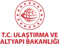


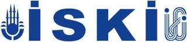

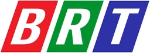
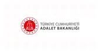
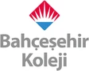
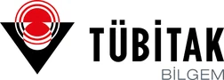
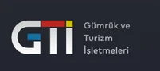
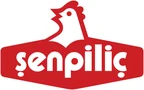
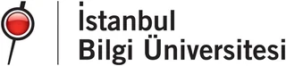
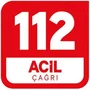
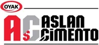
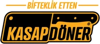
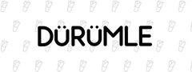
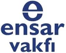
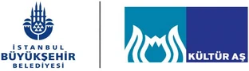
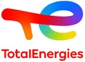
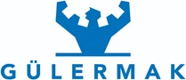
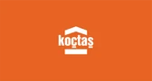
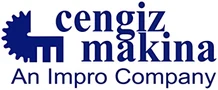
Logo kullanım politikası
Bu sayfada yalnızca logo kullanımı izni doğrulanabilen kurumlar gösterilir. Tam referans listemiz 89+ kurumdan oluşur; kurumların ilgili marka kullanım kurallarına uygun olarak logoları yazılı izin süreci devam etmektedir.